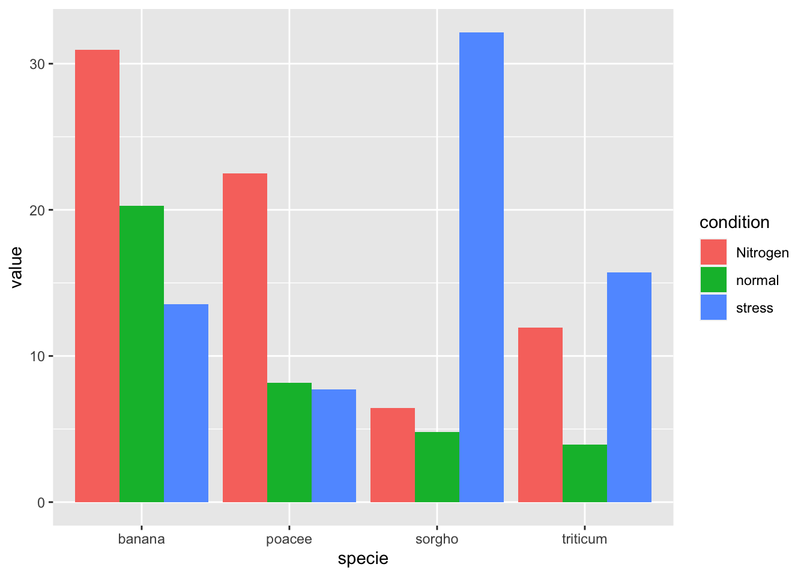
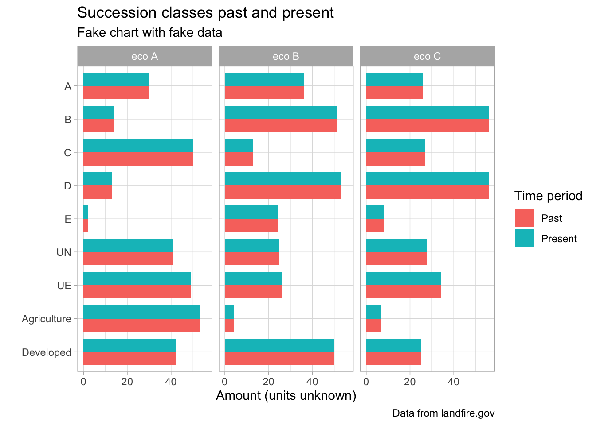

challenge_fas
Coding Challenge
Simple example grouped bar plot
Review of data:
library(readr)
#bps_aoi_attributes
bps_aoi_attributes <- read_csv("input_data/bps_aoi_attributes.csv")New names:
Rows: 21 Columns: 24
── Column specification
──────────────────────────────────────────────────────── Delimiter: "," chr
(4): BPS_MODEL, BPS_NAME, GROUPVEG, FRG_NEW dbl (20): ...1, VALUE, Freq,
BPS_CODE, ZONE, FRI_REPLAC, FRI_MIXED, FRI_SURF...
ℹ Use `spec()` to retrieve the full column specification for this data. ℹ
Specify the column types or set `show_col_types = FALSE` to quiet this message.
• `` -> `...1`head(bps_aoi_attributes)# A tibble: 6 × 24
...1 VALUE Freq BPS_CODE ZONE BPS_MODEL BPS_NAME GROUPVEG FRI_REPLAC
<dbl> <dbl> <dbl> <dbl> <dbl> <chr> <chr> <chr> <dbl>
1 1 2160 3130351 15070 44 15070_44 Ozark-O… Hardwoo… 100
2 2 2132 2996479 13040 44 13040_32_43_4… Ozark-O… Hardwood 188
3 3 2141 2350146 13670 44 13670_32_44 Ozark-O… Conifer 347
4 4 2140 1765782 13640 44 13640_32_44_49 Ozark-O… Hardwood 38
5 5 2139 530667 13340 44 13340_32_43_44 Ozark-O… Hardwood 316
6 6 2142 414868 13710 44 13710_44 West Gu… Hardwoo… 121
# ℹ 15 more variables: FRI_MIXED <dbl>, FRI_SURFAC <dbl>, FRI_ALLFIR <dbl>,
# PRC_REPLAC <dbl>, PRC_MIXED <dbl>, PRC_SURFAC <dbl>, FRG_NEW <chr>,
# R <dbl>, G <dbl>, B <dbl>, RED <dbl>, GREEN <dbl>, BLUE <dbl>, ACRES <dbl>,
# REL_PERCENT <dbl>tail(bps_aoi_attributes)# A tibble: 6 × 24
...1 VALUE Freq BPS_CODE ZONE BPS_MODEL BPS_NAME GROUPVEG FRI_REPLAC
<dbl> <dbl> <dbl> <dbl> <dbl> <chr> <chr> <chr> <dbl>
1 16 2157 24125 14800 44 14800_36_37_44 Gulf an… Riparian 1020
2 17 2159 19922 15060 44 15060_37_44 West Gu… Hardwood 308
3 18 2138 11419 13230 44 13230_32_36_37_… West Gu… Hardwood 271
4 19 2151 13737 14580 44 14580_37_44_45_… West Gu… Hardwoo… 179
5 20 31 110 31 NA <NA> Barren-… Barren-… NA
6 21 2158 820 14930 44 14930_41_42_44_… Central… Riparian 17
# ℹ 15 more variables: FRI_MIXED <dbl>, FRI_SURFAC <dbl>, FRI_ALLFIR <dbl>,
# PRC_REPLAC <dbl>, PRC_MIXED <dbl>, PRC_SURFAC <dbl>, FRG_NEW <chr>,
# R <dbl>, G <dbl>, B <dbl>, RED <dbl>, GREEN <dbl>, BLUE <dbl>, ACRES <dbl>,
# REL_PERCENT <dbl>#bps_model_number_name
bps_model_number_name <- read_csv("input_data/bps_model_number_name.csv")Rows: 819 Columns: 2
── Column specification ────────────────────────────────────────────────────────
Delimiter: ","
chr (2): BpS_Name, Model_Code
ℹ Use `spec()` to retrieve the full column specification for this data.
ℹ Specify the column types or set `show_col_types = FALSE` to quiet this message.head(bps_model_number_name)# A tibble: 6 × 2
BpS_Name Model_Code
<chr> <chr>
1 North Pacific Oak Woodland 10080_1_2_3_7
2 Northwestern Great Plains Aspen Forest and Parkland 10090_19
3 Rocky Mountain Aspen Forest and Woodland 10110_15
4 Rocky Mountain Aspen Forest and Woodland 10110_16_23_24
5 Rocky Mountain Aspen Forest and Woodland 10110_20_29
6 Rocky Mountain Aspen Forest and Woodland 10110_21 tail(bps_model_number_name)# A tibble: 6 × 2
BpS_Name Model_Code
<chr> <chr>
1 Hawaii Montane-Subalpine Mesic Grassland 18230_79
2 Hawaii Alpine Dwarf-Shrubland 18240_79
3 Hawaii Dry Cliff 18250_79
4 Hawaii Dry Coastal Strand 18260_79
5 Hawaii Wet-Mesic Coastal Strand 18270_79
6 Hawaii Subalpine Mesic Shrubland 18280_79 ## seems useless
#combine_raw
combine_raw <- read_csv("input_data/combine_raw.csv")New names:
Rows: 146 Columns: 4
── Column specification
──────────────────────────────────────────────────────── Delimiter: "," dbl
(4): ...1, Var1, Var2, Freq
ℹ Use `spec()` to retrieve the full column specification for this data. ℹ
Specify the column types or set `show_col_types = FALSE` to quiet this message.
• `` -> `...1`head(combine_raw)# A tibble: 6 × 4
...1 Var1 Var2 Freq
<dbl> <dbl> <dbl> <dbl>
1 3 2132 1 15903
2 4 2136 1 96
3 5 2138 1 98
4 6 2139 1 3545
5 7 2140 1 7406
6 8 2141 1 8560tail(combine_raw)# A tibble: 6 × 4
...1 Var1 Var2 Freq
<dbl> <dbl> <dbl> <dbl>
1 226 2155 180 63618
2 227 2156 180 24590
3 228 2157 180 8961
4 229 2158 180 171
5 230 2159 180 1290
6 231 2160 180 198309#LF16_BPS_200
LF16_BPS_200 <- read_csv("input_data/LF16_BPS_200.csv")Rows: 1770 Columns: 20
── Column specification ────────────────────────────────────────────────────────
Delimiter: ","
chr (4): BPS_MODEL, BPS_NAME, GROUPVEG, FRG_NEW
dbl (16): VALUE, BPS_CODE, ZONE, FRI_REPLAC, FRI_MIXED, FRI_SURFAC, FRI_ALLF...
ℹ Use `spec()` to retrieve the full column specification for this data.
ℹ Specify the column types or set `show_col_types = FALSE` to quiet this message.head(LF16_BPS_200)# A tibble: 6 × 20
VALUE BPS_CODE ZONE BPS_MODEL BPS_NAME GROUPVEG FRI_REPLAC FRI_MIXED
<dbl> <dbl> <dbl> <chr> <chr> <chr> <dbl> <dbl>
1 -9999 -9999 NA <NA> NoData NoData NA NA
2 11 11 NA <NA> Open Wa… Open Wa… NA NA
3 12 12 NA <NA> Perenni… Perenni… NA NA
4 31 31 NA <NA> Barren-… Barren-… NA NA
5 381 11250 15 11250_6_12_13_15_… Inter-M… Shrubla… 117 NA
6 383 10010 25 10010 Inter-M… Sparse NA NA
# ℹ 12 more variables: FRI_SURFAC <dbl>, FRI_ALLFIR <dbl>, PRC_REPLAC <dbl>,
# PRC_MIXED <dbl>, PRC_SURFAC <dbl>, FRG_NEW <chr>, R <dbl>, G <dbl>,
# B <dbl>, RED <dbl>, GREEN <dbl>, BLUE <dbl>tail(LF16_BPS_200)# A tibble: 6 × 20
VALUE BPS_CODE ZONE BPS_MODEL BPS_NAME GROUPVEG FRI_REPLAC FRI_MIXED
<dbl> <dbl> <dbl> <chr> <chr> <chr> <dbl> <dbl>
1 2721 10432 3 10432_2_3 Mediterranea… Conifer 221 60
2 2722 10431 3 10431_2_3_6_7 Mediterranea… Conifer 165 46
3 2723 13620 41 13620_41_50 Laurentian-A… Hardwoo… 355 680
4 2724 13622 41 13622_41_50 Laurentian-A… Hardwoo… 230 NA
5 2725 13620 50 13620_41_50 Laurentian-A… Hardwoo… 355 680
6 2726 13622 50 13622_41_50 Laurentian-A… Hardwoo… 230 NA
# ℹ 12 more variables: FRI_SURFAC <dbl>, FRI_ALLFIR <dbl>, PRC_REPLAC <dbl>,
# PRC_MIXED <dbl>, PRC_SURFAC <dbl>, FRG_NEW <chr>, R <dbl>, G <dbl>,
# B <dbl>, RED <dbl>, GREEN <dbl>, BLUE <dbl>## also may be useless?
#rec_con_modified
ref_con_modified <- read_csv("input_data/ref_con_modified.csv")Rows: 819 Columns: 11
── Column specification ────────────────────────────────────────────────────────
Delimiter: ","
chr (1): Model_Code
dbl (10): A, B, C, D, E, Agriculture, Developed, Water, UN, UE
ℹ Use `spec()` to retrieve the full column specification for this data.
ℹ Specify the column types or set `show_col_types = FALSE` to quiet this message.head(ref_con_modified)# A tibble: 6 × 11
Model_Code A B C D E Agriculture Developed Water UN
<chr> <dbl> <dbl> <dbl> <dbl> <dbl> <dbl> <dbl> <dbl> <dbl>
1 10080_1_2_3_7 9 5 86 NA NA 0 0 0 0
2 10090_19 21 68 11 NA NA 0 0 0 0
3 10110_15 7 35 58 NA NA 0 0 0 0
4 10110_16_23_24 49 24 6 18 3 0 0 0 0
5 10110_20_29 17 18 25 26 14 0 0 0 0
6 10110_21 9 24 25 27 15 0 0 0 0
# ℹ 1 more variable: UE <dbl>tail(ref_con_modified)# A tibble: 6 × 11
Model_Code A B C D E Agriculture Developed Water UN
<chr> <dbl> <dbl> <dbl> <dbl> <dbl> <dbl> <dbl> <dbl> <dbl>
1 18230_79 3 97 NA NA NA 0 0 0 0
2 18240_79 9 91 NA NA NA 0 0 0 0
3 18250_79 5 95 NA NA NA 0 0 0 0
4 18260_79 8 34 58 NA NA 0 0 0 0
5 18270_79 5 15 80 NA NA 0 0 0 0
6 18280_79 2 8 90 NA NA 0 0 0 0
# ℹ 1 more variable: UE <dbl>#scls_aoi_attributes
scls_aoi_attributes <- read_csv("input_data/scls_aoi_attributes.csv")New names:
Rows: 11 Columns: 13
── Column specification
──────────────────────────────────────────────────────── Delimiter: "," chr
(2): LABEL, DESCRIPTION dbl (11): ...1, VALUE, Freq, R, G, B, RED, GREEN, BLUE,
ACRES, REL_PERCENT
ℹ Use `spec()` to retrieve the full column specification for this data. ℹ
Specify the column types or set `show_col_types = FALSE` to quiet this message.
• `` -> `...1`head(scls_aoi_attributes)# A tibble: 6 × 13
...1 VALUE Freq LABEL DESCRIPTION R G B RED GREEN BLUE
<dbl> <dbl> <dbl> <chr> <chr> <dbl> <dbl> <dbl> <dbl> <dbl> <dbl>
1 1 1 71130 A Succession Clas… 161 99 51 0.631 0.388 0.2
2 2 2 240864 B Succession Clas… 56 168 0 0.220 0.659 0
3 3 3 631385 C Succession Clas… 201 222 171 0.788 0.871 0.671
4 4 4 2266032 D Succession Clas… 255 248 166 1 0.973 0.651
5 5 5 5673933 E Succession Clas… 0 74 77 0 0.290 0.302
6 6 6 14596 UN Uncharacteristi… 160 0 0 0.627 0 0
# ℹ 2 more variables: ACRES <dbl>, REL_PERCENT <dbl>tail(scls_aoi_attributes)# A tibble: 6 × 13
...1 VALUE Freq LABEL DESCRIPTION R G B RED GREEN BLUE
<dbl> <dbl> <dbl> <chr> <chr> <dbl> <dbl> <dbl> <dbl> <dbl> <dbl>
1 6 6 14596 UN Uncharacte… 160 0 0 0.627 0 0
2 7 7 1766717 UE Uncharacte… 255 0 0 1 0 0
3 8 111 286406 Water Water 0 0 255 0 0 1
4 9 120 563479 Developed Developed 132 0 138 0.518 0 0.541
5 10 132 444 Barren or… Barren or … 191 191 191 0.749 0.749 0.749
6 11 180 761716 Agricultu… Agriculture 223 115 255 0.875 0.451 1
# ℹ 2 more variables: ACRES <dbl>, REL_PERCENT <dbl>Plan:
bps_aoi_attributes - need Freq, BPS_NAME, BPS_MODEL, and VALUE
combine_raw - present succession classes per BpS
ref_con_modified - past reference percentages for each succession class per BpS – pivot longer?
scls_aoi_attributes - names to merge
Need to:
- clean up data - just whats needed above
- i think i need to tidy ref_con_modified to fit like combine_raw
- tie in names with models for:
- Ozark-Ouachita Dry-Mesic Oak Forest
- Ozark-Ouachita Shortleaf Pine-Bluestem Woodland
- Ozark-Ouachita Shortleaf Pine-Oak Forest and Woodland
- merge datasets with name, model, percentages for past and present, and value?
Fake plot:

Data wrangling:
###
#select only variables needed from bps_aoi_attributes
bps_a_a <- subset(bps_aoi_attributes, select=c(BPS_NAME, BPS_MODEL, VALUE, Freq))
#only keep names needed
library(tidyverse)
bps <- bps_a_a %>% filter(BPS_NAME %in% c("Ozark-Ouachita Dry-Mesic Oak Forest", "Ozark-Ouachita Shortleaf Pine-Bluestem Woodland", "Ozark-Ouachita Shortleaf Pine-Oak Forest and Woodland" ))
###
###
#now in combine_raw -- filter only values 2160, 2132, and 2141 in Var1
# combine_raw %>% filter(Var1 %>% c("2160", "2132", "2141"))
#Error in `filter()`:
# ℹ In argument: `Var1 %>% c("2160", "2132", "2141")`.
# Caused by error:
# ! `..1` must be of size 146 or 1, not size 149.
#trying to filter a different way
#first, subset columns needed
combine_raw_sub <- subset(combine_raw, select=c(Var1, Var2, Freq))
#make a vector of values needed
comb_raw <-
combine_raw_sub |>
filter(Var1 == 2160 | Var1 == 2132 | Var1 == 2141)
###
###
#now cleaning LF16_BPS_200 like bps_aoi_attributes
lf16 <- subset(LF16_BPS_200, select=c(BPS_NAME, BPS_MODEL, VALUE))
#keep only names needed
lf <- lf16 %>% filter(BPS_NAME %in% c("Ozark-Ouachita Dry-Mesic Oak Forest", "Ozark-Ouachita Shortleaf Pine-Bluestem Woodland", "Ozark-Ouachita Shortleaf Pine-Oak Forest and Woodland" ))
###
###
#filter ref_con_modified for specific model codes "15070_44", "13040_32_43_44_49", "13670_32_44"
rcm <- ref_con_modified %>% filter(Model_Code %in% c("15070_44", "13040_32_43_44_49", "13670_32_44"))
#pivot longer rcm data frame
rcm_long <- rcm %>% pivot_longer(
cols = !Model_Code,
names_to = "label",
values_to = "score"
)
#change column name to BPS_MODEL to match other datasets
colnames(rcm_long) <- c('BPS_MODEL', 'class', 'score')
###
###
#get succession classes from scls_aoi_attributes A, B, C, D, E, UN, UE, Agriculture, Developed
scls <- scls_aoi_attributes %>% filter(LABEL %in% c("A", "B", "C", "D","E","UN","UE", "Agriculture", "Developed"))
#may not use this, just manually add?
###
#
###